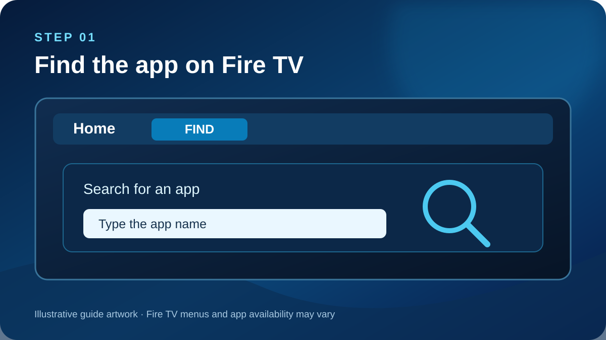
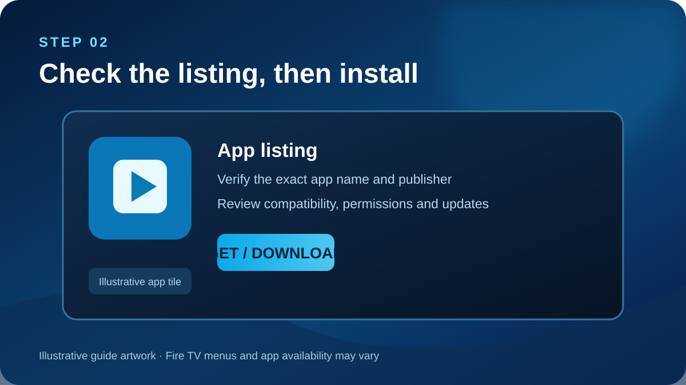
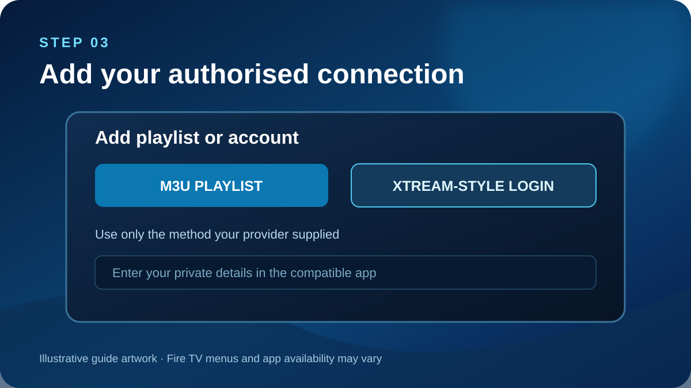

DEVICE SETUP GUIDE · UK
How to Set Up an IPTV Player on Amazon Fire TV
Use this step-by-step guide to check your Fire TV, find a compatible player, add a playlist or account supplied by your provider, and fix common setup problems. The player is only an app: it does not include channels or a subscription.
Author: IPTV Guide UK · Updated: 24 November 2026 · 6–8 minute read
1. Before you start
Take a minute to check these details first. It is easier to solve compatibility problems before you install an app or enter private account information.
Identify your Fire TV
Check the device model and software version in Settings. Different generations and regions may offer different app catalogues.
Confirm app support
Ask your provider which player apps and connection methods it supports on your exact Fire TV model.
Prepare your details
Have the provider-issued M3U URL or supported login details ready. Keep them private; a full playlist URL may contain account credentials.
2. Find a compatible player on Fire TV
From the Fire TV home screen, open Find or the search option, then search for the exact app name recommended by your provider. Amazon's menu labels can differ between Fire TV experiences, so use the search or app-discovery option shown on your device.

Check the exact app name and publisher. Similar app names and copied icons can be misleading. Open the app listing and review its developer, supported devices, update history, permissions and privacy information.
Amazon explains how to search for and download apps in its official Fire TV app download instructions. You can also check the listing's compatible-device information before installing.
3. Check the listing and install the app safely
- Open the app listing from the Fire TV app store or search results.
- Confirm the developer or publisher is the one you intended to use.
- Review the app description, device compatibility, privacy details and recent updates.
- If the listing is suitable, select Get or the download option shown on your screen.
- Wait for installation to finish, then choose Open.

4. Add your playlist or account details
Open the player and look for its option to add a playlist, account or user. The exact menu name depends on the app. Your provider should tell you which connection method it supports.

M3U playlist
You may be asked to paste a complete playlist URL or select a supported local playlist file. Copy the address exactly as supplied, including its path and any query parameters.
Xtream-style login
If supported, the app may ask for a server address, username and password in separate fields. Enter only the details issued for your account.
- Select only the connection method that matches your provider's instructions.
- Enter the details carefully. Check spelling, punctuation, capital letters and any server address or port.
- If the app asks for a playlist name, use a label that helps you recognise it. This is usually just a local display name.
- Submit the details once and allow the app time to load. Large playlists can take longer to process.
Never use example credentials from a tutorial. Do not publish your M3U URL, password, activation code or account QR code in a screenshot or public support post.
5. Check the TV guide and test playback
An electronic programme guide (EPG) is separate from the video stream. First check whether your provider includes guide data and whether it is delivered with the playlist or supplied separately. Follow the player's current instructions to refresh or match guide data; menu names vary by app.
- Confirm that the playlist or account has finished loading.
- Check whether channel names and categories appear as expected.
- If guide listings are missing, confirm that EPG data is included and supported by the player.
- Test more than one channel or stream. A single failing stream does not necessarily mean the whole device or playlist is broken.
For a deeper explanation of guide data and channel matching, read IPTV EPG explained. If a playlist itself will not load, use our M3U playlist troubleshooting guide.
6. Fix common Fire TV setup problems
| What you see | What to check | What to do next |
|---|---|---|
| App does not appear in search | Exact Fire TV model, country/region and app availability. | Check the app developer's current compatibility information. Do not install a look-alike app from an unknown source. |
| Download will not start | Internet connection, available storage and Amazon account or Appstore prompts. | Retry from the app listing. If it still fails, use Amazon's Appstore download troubleshooting. |
| Login is rejected | Typing errors, account status and whether the selected method matches the provider's details. | Re-enter the provider-issued details carefully. If they still fail, ask the provider to confirm the account and supported app method. |
| Playlist loads but EPG is empty | Whether guide data is included, the feed format and channel identifiers. | Refresh the guide using the app's instructions and ask the provider whether the relevant channel data is supplied. |
| Every stream buffers | Wi-Fi signal, household network use, device performance and app version. | Test the connection near the Fire TV, pause large downloads and compare another streaming app. |
| Only one stream fails | Whether other channels work and whether the problem repeats. | Record the time and error message, then contact the source provider. Avoid changing unrelated settings. |
Amazon's Fire TV Support hub also covers Wi-Fi, app errors, software updates and device troubleshooting.
Frequently asked questions
Does Fire TV include IPTV channels?
No. Fire TV is a streaming device or platform. A player app is software; it does not automatically provide a channel package, subscription or permission to view content.
Can I install any IPTV player on every Fire TV Stick?
No. App availability depends on the exact device, software version, region and app developer. Check the app listing and compatible-device information before relying on a tutorial.
Should I install an APK from a website?
Use the official app store or a distribution route published by the verified developer. Avoid unknown mirrors and modified installers.
Why does my Fire TV show channels but no programme guide?
The service may not include EPG data, or the player may need a separate guide source or channel mapping. Check the provider's instructions and the app's supported formats.
Why does one channel buffer while others work?
The issue may be limited to that stream or its source. Compare other streams and note the time and error before contacting the provider.
This is a general educational guide. It does not verify or endorse any provider, app, stream, channel package or content rights. Always check current compatibility and use content you are authorised to access.